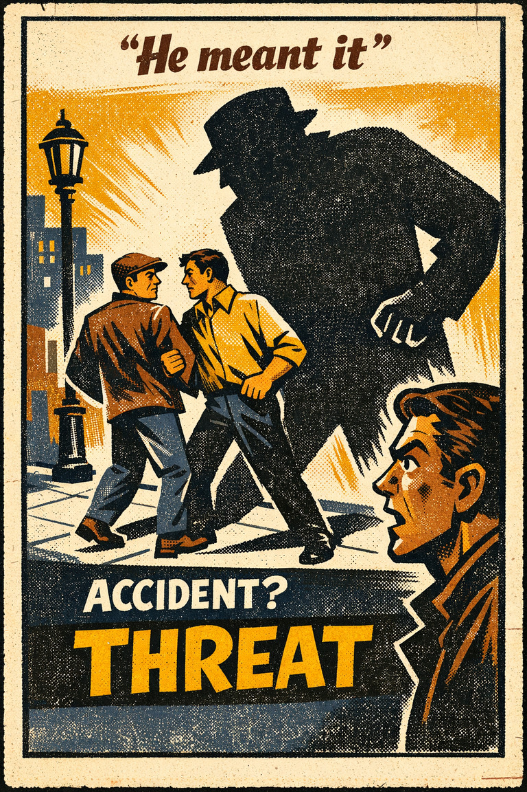

Common in feedback and conflict
92
Negative cues often dominate attention long after their proportional role should have shrunk.
Rare
Frequent

Cognitive Biases
A practical cognitive-bias site with clear definitions, learning paths, assessments, self-audits, and debiasing tools.
Cognitive Bias
The tendency to give bad news, threats, criticism, and losses more psychological weight than equally sized positives.
What it distorts
It can make the whole environment look worse, riskier, or more hostile than the total evidence supports.
Typical trigger
Conflict, uncertainty, public criticism, and feedback environments that highlight errors.
First countermove
Force a count of what is going right before deciding how diagnostic the negative signal really is.
Best use
Quick reset
Is the bad signal genuinely more diagnostic, or is it just receiving more psychological weight because it is bad?
Potential harms command attention quickly because organisms that miss threats pay steep costs. That makes negative information sticky, memorable, and behavior-shaping.
These are classroom-facing editorial estimates for comparing how the bias behaves in use. They are teaching aids, not measured statistics.
Common in feedback and conflict
92
Negative cues often dominate attention long after their proportional role should have shrunk.
Easy to spot from outside
53
Usually easier to see once positive and neutral counts are put back on the page.
Easy to innocently commit
88
Threat-sensitive weighting often feels like realism rather than skew.
Teaching difficulty
33
Concrete before-and-after counts make the pattern very teachable.
This comparison makes the hidden pull easier to see before the technical label has to do all the work.
Biased move
This is like grading a whole season by replaying only the worst game because mistakes burn brighter than ordinary competence.
Clearer comparison
The bad game may matter, but it cannot own the entire verdict by itself. A fair read has to restore the base line the negative event pushed out of view.
Do not use this label for every serious warning. Some negative information should dominate. The distortion appears when bad news gets extra weight simply because it is aversive, vivid, or threatening rather than because it is truly more diagnostic.
Use this label when criticism, threats, losses, or bad episodes begin outweighing equivalent positive or neutral information more than the evidential balance justifies.
Use the quick check, caveat, and nearby confusions together. The fastest diagnosis is often the noisiest one.
Each example changes the surface context while keeping the same hidden distortion in place.
One harsh comment outweighs a week of ordinary or positive interactions.
A team defines the quarter by the most visible failure even when the trend line was mostly competence and improvement.
Feeds dominated by conflict, crime, and scandal make the larger environment feel worse than broader measures support.
The bad event seems more revealing, more serious, and more memorable than the total pattern warrants.
Teaching note: This entry pairs especially well with media analysis because much of modern attention is a market for negative salience.
The strongest debiasing moves change the process, not just the label.
Force an explicit count of what is ordinary, improving, and still concerning.
Review trend lines before reacting to the worst single case.
Design reporting so gains, stability, and failure all remain visible together.
Practice And Repair
Negativity bias does not require drama. It can show up in small weighting asymmetries where one criticism, one risk, or one awkward episode starts dominating the whole evaluation.
A bad outcome, criticism, threat cue, or potential loss enters the scene and pulls attention quickly.
Because the negative signal feels urgent and memorable, it starts to look more revealing than a larger set of ordinary or positive evidence.
Evaluation gets organized around the negative cue, making the whole environment seem worse, riskier, or more hostile than the total record supports.
Count positive, neutral, and negative evidence separately, then ask whether the weighting still looks fair once the denominator returns.
What would a neutral observer score here if the worst moment were not allowed to define the whole pattern?
Spot It
Slow It
Reframe It
These are nearby labels that can share the same outer appearance while differing in what actually drives the distortion. Use the overlap, the distinction, and the diagnostic question together before settling the call.
Why compare it: Negativity bias makes bad events extra sticky; availability heuristic explains how that stickiness then distorts estimates of frequency and risk.
Why compare it: Fundamental attribution error turns bad behavior into character verdicts; negativity bias is the overweighting of the bad signal itself.
Why compare it: Halo effect generalizes one impression across multiple traits; negativity bias explains why the negative impression often dominates.
These are useful when the label seems roughly right but the process change still feels underspecified.
If I counted positives, negatives, and neutral cases separately, what would the actual ratio look like?
Is this event serious because it is representative or because it is emotionally loud?
What would a neutral observer say the trend has been?
These sourced cases do not prove what was in someone's head with perfect certainty. They are teaching cases for showing where the bias pressure becomes visible in practice.
Bad is stronger than good
Research collected under the phrase 'bad is stronger than good' shows that negative events, traits, and feedback often have more psychological impact than comparable positives.
Why it fits: The asymmetry is not only moral or strategic. It is a weighting pattern that makes bad signals dominate the record.
2001
Single negative reviews can dominate broader impressions
In many evaluation settings, one strongly negative episode gets remembered and discussed more than many ordinary or positive episodes surrounding it.
Why it fits: The negative item does not merely enter the record. It starts owning the record.
Modern examples
These linked tools turn the page into practice instead of leaving it at the level of definition.
2 related paths place this bias beside the distortions it most often travels with in practice.
Direct path
Use this path when a discussion is drifting from behavior into identity, motive, or character verdict.
Direct path
Use this path when ambiguous behavior is being read through threat, bad faith, or us-versus-them interpretation.
These short audits help catch this bias before it hardens into a verdict, forecast, or decision.
Direct audit
Am I reacting to the person, to the situation, or to my own first-pass impression of the person?
Direct audit
Is this memorable because it is representative, or because it is dramatic and easy to circulate?
This bias is not yet the named center of its own kit, but it already appears in nearby workshop material that teaches the same pressure in context.
Nearby workshop
Relationship Conflict Attribution Reset
A reflective kit for slowing motive-reading, character verdicts, and self-protective memory during conflict.
Nearby workshop
A 45-minute lesson for separating vivid stories, repeated claims, and missing denominators before a news item becomes belief.
These scenarios mix direct and nearby cases so you can practice the label itself and the broader judgment pattern around it.
Direct scenario
One ugly incident defines the whole vendor
After one painfully visible failure, a client starts describing an entire vendor relationship as a disaster even though the broader service record has been mostly solid and low-dr…
Nearby scenario
The charming candidate must be strong at everything
After a candidate gives a poised, warm opening answer, interviewers start inflating their ratings of judgment, technical depth, and reliability even in areas they have barely test…
These links widen the frame around the bias without interrupting the core lesson on this page.
An article on why halo effect, attribution errors, implicit bias, and related distortions tend to compound rather than appear in isolation.
CogBias theory
These neighbors were selected from shared categories, shared patterns, and explicit editorial links where available.

The tendency to judge frequency, risk, or importance by how easily examples come to mind.

The tendency to explain other people's behavior too quickly in terms of character while underweighting situational pressures and constraints.

The tendency for one salient positive or negative impression to spill over into unrelated judgments about a person, product, or institution.

The tendency to read ambiguous behavior as hostile, threatening, or intentionally disrespectful even when the evidence is underdetermined.

The tendency to overestimate how much other people notice, remember, or care about one's appearance, mistakes, or behavior.

The tendency to remember bizarre or unusual material better than ordinary material.